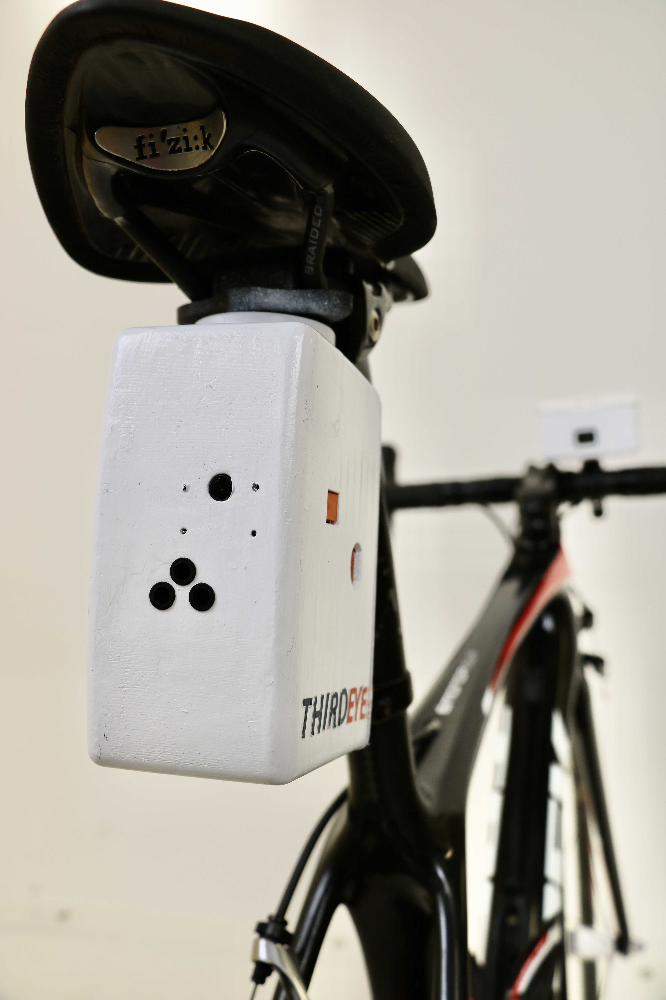
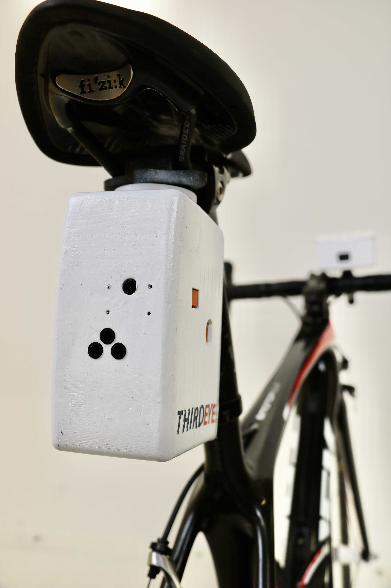

Designed to be mounted under the saddle or handlebars of any bicycle, THIRDEYE is an affordable vehicle detection sensor that improves road safety for cyclists and vehicles.
The sensor can detect vehicles approaching a cyclist of up to 30 meters away, alerting both the cyclist and drive of eachother. The device contains a camera which records detected vehicles, used as an investigative measure in the event of a collision with the user.
 

- Object Recognition
- Machine Learning
- Portable
- Functional
- Sustainable
Project Recognition
Recipient of a High Distinction for the the Young Scientist 2021 - Innovations and Engineering Design Award.
Achieved a HSC mark of 95 for Design & Technology.
Disclaimer: Whilst this was an individual design project, electrical and programming support was received from my coding mentor. All else was independently completed.